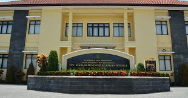

Motto Sekolah: [budaya kerja, disiplin dan ber prestasi]

[SMKN 2 MOJOKERTO] adalah lembaga pendidikan yang berdedikasi untuk mencetak generasi muda yang cerdas, berakhlak mulia, dan siap menghadapi tantangan masa depan. Didirikan pada [Tahun Berdiri], sekolah kami telah memberikan pendidikan berkualitas kepada ribuan siswa dari berbagai latar belakang.
Kami memiliki tenaga pengajar yang berpengalaman dan fasilitas yang memadai untuk mendukung proses belajar mengajar yang efektif dan menyenangkan.
SMK Negeri 2 Mojokerto, menghasilkan Sumber Daya Manusia (SDM) yang berkarakter, kompeten dan siap kerja serta mampu berwirausaha di era globalisasi
Alamat: [Jl. Raya Pulorejo 126B, Pulorejo, Kec. Prajurit Kulon, Kota Mojokerto, Jawa Timur 61325.]
Telepon: [(0321) 387356 ]
Email: [ smkn2mr@gmail.com]
Website: [smkn2mojokerto.sch.id]